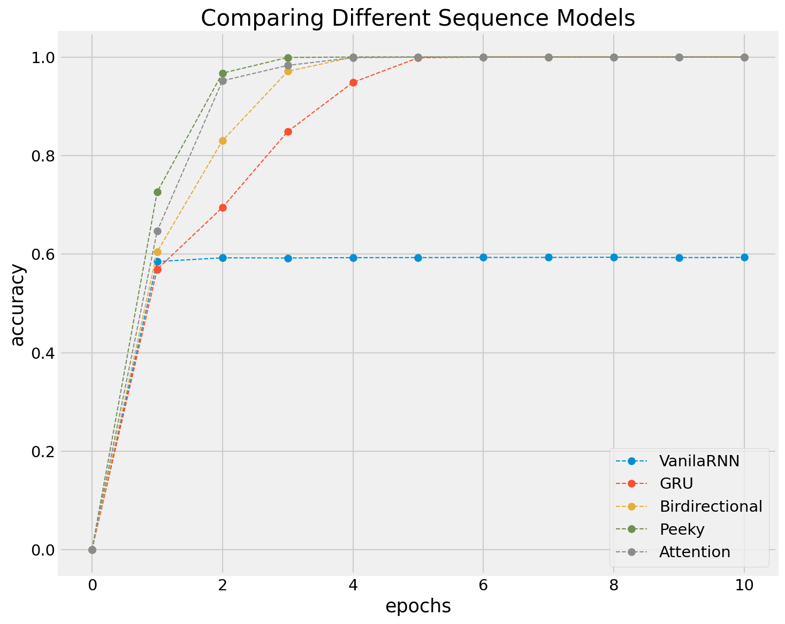
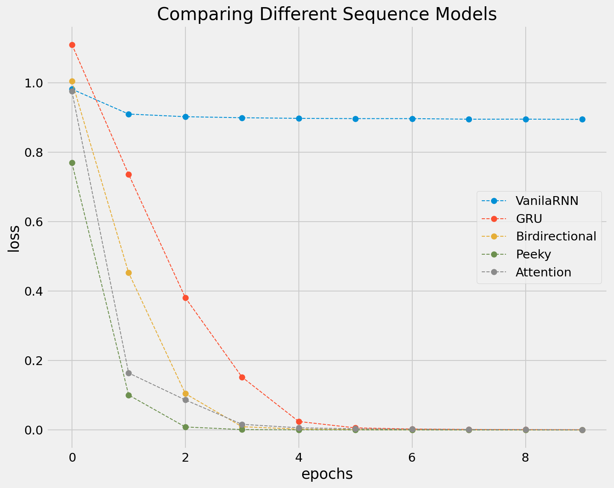
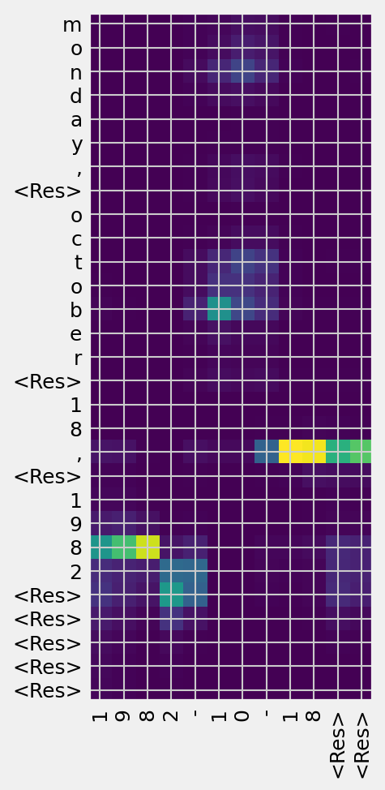

Assignment XII: Encoder-Decoder Sequence Models
Contents
Assignment XII: Encoder-Decoder Sequence Models¶
Question 1¶
Please download the dataset, demo_data/date-student-version.csv, which includes a two-column data frame. The first column, INPUT, includes dates representations in variable ways, and the second column, OUTPUT, includes their uniform representations.
Please create a Sequence Model using Encoder-Decoder architecture as shown in the Number Addition examples in our lecture, whose objective is to perform date conversion, i.e., to convert the dates in variable formats (INPUT) to dates in a consistent format (OUTPUT).
In particular, please compare the effectiveness of different network architectures, including:
Simple RNN based Model
GRU/LSRM based Moel
Bi-directional Sequence Model
Peeky Sequence Model
Attention-based Sequence Model
In your report, please present:
(a) the training histories of each model in one graph for comparison of their respective effectiveness.
(b) translations of a few sequences for quick model evaluation
(c) the attention plot from the attention-based model on one random input sequence
for seq_index in range(20):
# Take one sequence (part of the training set)
# for trying out decoding.
decoded_sentence, _ = decode_sequence(
encoder_input_onehot[seq_index:seq_index + 1, :, :])
print('-')
print('Input sentence:', tr_input_texts[seq_index])
print('Decoded sentence:', decoded_sentence)
-
Input sentence: June 16, 2015
Decoded sentence: 2015-06-16__
-
Input sentence: 12/16/83
Decoded sentence: 1983-12-16__
-
Input sentence: SEPTEMBER 9, 1998
Decoded sentence: 1998-09-09__
-
Input sentence: April 17, 2013
Decoded sentence: 2013-04-17__
-
Input sentence: January 26, 1990
Decoded sentence: 1990-01-26__
-
Input sentence: Sunday, May 29, 2011
Decoded sentence: 2011-05-29__
-
Input sentence: January 3, 1974
Decoded sentence: 1974-01-03__
-
Input sentence: 10/24/79
Decoded sentence: 1979-10-24__
-
Input sentence: jun 14, 1991
Decoded sentence: 1991-06-14__
-
Input sentence: November 2, 2014
Decoded sentence: 2014-11-02__
-
Input sentence: june 20, 1995
Decoded sentence: 1995-06-20__
-
Input sentence: September 4, 1996
Decoded sentence: 1996-09-04__
-
Input sentence: OCT 4, 1980
Decoded sentence: 1980-10-04__
-
Input sentence: june 19, 1995
Decoded sentence: 1995-06-19__
-
Input sentence: 9/19/94
Decoded sentence: 1994-09-19__
-
Input sentence: Monday, June 30, 2014
Decoded sentence: 2014-06-30__
-
Input sentence: 12/20/86
Decoded sentence: 1986-12-20__
-
Input sentence: Tuesday, July 17, 2012
Decoded sentence: 2012-07-17__
-
Input sentence: friday, december 26, 1980
Decoded sentence: 1980-12-26__
-
Input sentence: Jul 30, 1994
Decoded sentence: 1994-07-30__
  